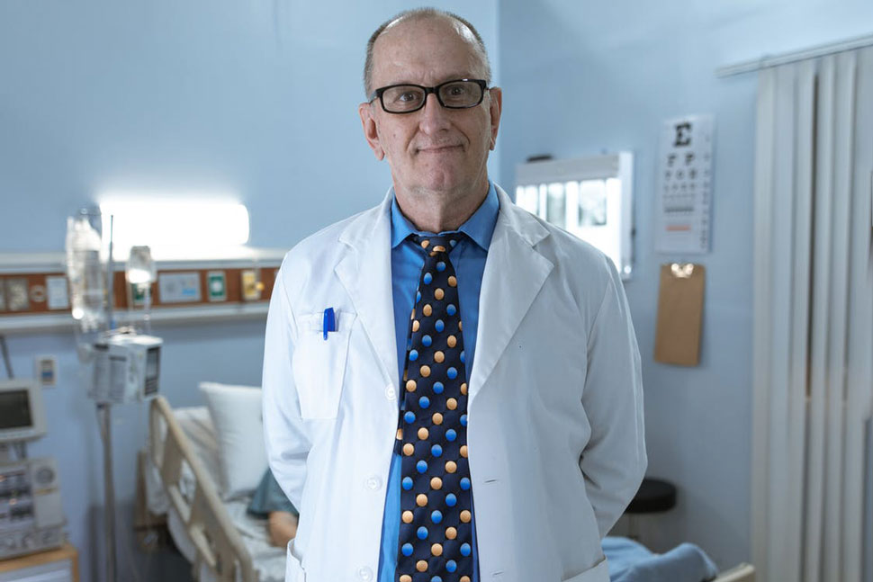
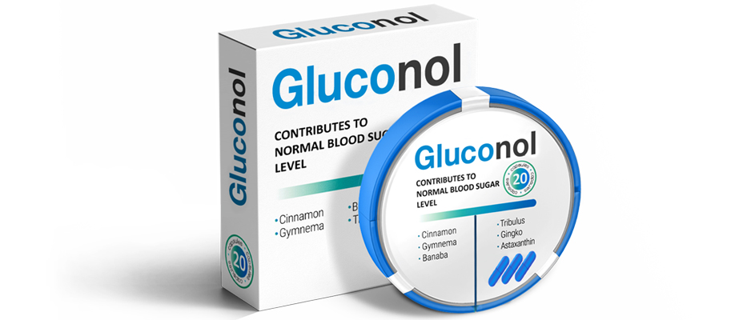

Doar o persoană care are cunoștințe în domeniu deosebește o persoană bolnavă de una sănătoasă – este opinia unui specialist cu privire la tratarea diabetului
Diagnosticul de diabet zaharat pe tot parcursul vieții este o concepție greșită comună și tristă. Asta susține Marius Petre, unul dintre cei mai importanți endocrinologi din România, care are o experiență de peste 30 de ani. Pacienți din toată lumea apelează la el pentru sfaturi, atât români, cât și canadieni, și europeni, inclusiv diverse celebrități. De asemenea, este autor a 9 monografii, 37 de articole și a numeroase publicații în jurnale științifice.

Dr. Petre insistă asupra faptului că marea majoritatea cazurilor de diabet de tip 2 pot fi vindecate cu ajutorul medicamentelor moderne.
- Probleme de endocrinologie;
- De ce nu puteți fi tratat cu metformină;
- Metode moderne de tratare a diabetului.
Bună ziua! Suntem foarte recunoscători că ați acceptat să ne acordați un interviu. Pentru un „medic vedetă” aceasta este o raritate.
Cred că faceți o faptă bună. Este de lăudat faptul că doriți să le spuneți adevărul oamenilor. Voi fi bucuros să vă răspund la întrebări.
Excelent. Am auzit multe despre opinia dvs. fermă față de diabet. În ciuda opiniei publice, susțineți că diabetul de tip 2 este vindecabil?
Este adevărat. Diabetul poate fi și trebuie tratat.
Din păcate, majoritatea pacienților iau medicamente care sunt depășite din punct de vedere al științei. Oamenii cred că aceste medicamente sunt „testate de timp”, dar de fapt această abordare le scurtează viața.
Adică sunteți împotriva terapiei convenționale?
Nu. Cred că este timpul să renunțăm la medicamentele care erau folosite acum 100 de ani. Nu sunt mai eficiente și mai benefice decât lipitorile și sângerarea. Și uneori sunt chiar periculoase.
În primul rând, mă refer la medicamente pe bază de metformină. Sunt o mulțime: Bahomet, Glikonon, Novamet, Glucofage… Pot enumera o multitudine, există aproximativ 20 de opțiuni comune. Deci, toate aceste pastile nu sunt doar inutile, ci dăunează organismului.

Acestea stimulează producția excesivă de insulină. Să nu uităm de concentrația mare de glucoză. Substanțele în exces fac sângele mai vâscos, precum caramelul.
- Vasele de sânge se deteriorează instantaneu: o încetinire a fluxului sanguin face imposibilă curățarea pereților, ca urmare, colesterolul se acumulează și formează plăci. Apare hipertensiunea, un însoțitor frecvent al diabetului.
- Ficatul și rinichii nu pot face față la atât de mulți hormoni (vă reamintesc că insulina este un hormon), țesuturile lor se uzează și dau naștere altor boli.
- Insuficiența hormonală provoacă dezvoltarea celulelor atipice și apar tumori. Și vorbim despre o altă boală teribilă, cancerul.
Acest lucru este asemănător cu supraîncărcarea unui aparat electric, când întregul sistem se strică din cauza unei reacții în lanț. Riscul unei varietăți de patologii devine critic.
Și la ce mai exact duce acest tratament?
Consecințele utilizării metforminei sunt deplorabile:
- Tulburări digestive
Afecțiuni de la diaree la ulcer gastric. Având în vedere problemele cu metabolismul carbohidraților, la diabetic acest lucru este cu adevărat periculos.
- Hipertensiune
Creșterea bruscă a tensiunii reduce semnificativ calitatea vieții pacientului. Aceasta provoacă dureri de cap, țiuit în urechi și atacuri de panică.
- Ciroză
Celulele hepatice sănătoase sunt înlocuite de un țesut conjunctiv. Ca urmare, toxinele nu sunt îndepărtate din organism, ci răspândite prin corp cu sânge, otrăvind organele.
- Pietre la rinichi
Diabeticii sunt în mod constant expuși riscului de a dezvolta nefropatie, insuficiență renală. Urolitiaza poate agrava situația.
- Anevrism
Deteriorarea vaselor de sânge duce la hemoragie spontană cu un rezultat fatal.
Apariția complicațiilor este dificil de prezis, deoarece depinde de o serie întreagă de factori: durata tratamentului, medicamentele administrate, predispoziția ereditară, stilul de viață etc. Cu toate acestea, procentul de pacienți care suferă de consecințele consumului de metformină este extrem de mare. Conform observațiilor mele personale, aproximativ 90%.
Dacă metformina este atât de periculoasă, atunci de ce o prescriu medicii?
Majoritatea medicilor dau vina pe diabet pentru deteriorarea sănătății pacienților. Metformina are un efect pe termen scurt, creșterea cantității de insulină ajută la reducerea nivelului de glucoză, dar în timp doza trebuie crescută. Cu cât cursul este mai lung, cu atât este nevoie de mai multă metformină și cu atât mai multă insulină intră în sânge.
Durerile de cap, oboseala, problemele renale sunt tipice pentru diabetici, astfel încât este mai ușor să dați vina pe boală. „Luați mai multă metformină”, — spune medicul.
Este un cerc vicios.
În plus, să nu uităm de motivația financiară. Medicamentele pe bază de metformină sunt fabricate ieftin. Adesea, farmaciștii „negociază” cu medicii pentru a recomanda un remediu specific. Deci toți au de câștigat, cu excepția pacienților.
Descrierea dvs. seamănă cu…
Da, eu însumi cred adesea că asta amintește de dependența de droguri. Menținând iluzia că diabetul este pentru totdeauna, pacienții cred ca au nevoie tot mai mare de metformină.
În primul rând trebuie să scăpăm de prejudecăți.
Și atunci cum să tratăm diabetul? Trebuie să căutăm alte medicamente care stimulează producția de insulină?
Nu. Diabetul este o boală complexă care afectează întregul organism. Nu vă puteți forța corpul să producă mai multă insulină: acest lucru nu rezolvă problemele, ci creează altele noi. Metformina este o dovadă excelentă în acest sens.
Pentru a vindeca diabetul, sunt necesare medicamente complexe care nu numai că mențin nivelul de insulină, ci și cresc susceptibilitatea celulelor la aceasta, întăresc întregul organism și luptă împotriva complicațiilor.
Eu recomand . Este complet natural, spre deosebire de medicamentele pe bază de metformină, un compus chimic izolat artificial. Aceasta înseamnă că nu are efecte secundare. În plus, conține 28 de extracte din plante, atent selectate, astfel încât efectul componentelor să se completeze reciproc.
Există foarte puține medicamente care pot fi prescrise în siguranță pentru diabet, dar s-a dovedit a fi un remediu universal. Îl recomand tuturor pacienților mei.
Chiar și vedetelor?
Da, chiar și vedetelor (râde).
 Vă prezentăm un fragment dintr-un
interviu cu Arșinel Sandu, actor și regizor, pacient al doctorului Marius Petre.
Vă prezentăm un fragment dintr-un
interviu cu Arșinel Sandu, actor și regizor, pacient al doctorului Marius Petre.
În tinerețe, am fost nesăbuit cu privire la sănătatea mea și nu m-am gândit deloc la pericolele unei alimentații nesănătoase. Da, iar profesia a presupus că mă voi adapta rolurilor viitoare: pentru unul a trebuit să mă îngraș, iar pentru celălalt, a trebuit să slăbesc de două ori mai mult. Nu e de mirare că până la 36 de ani aveam deja un nivel ridicat de zahăr în sânge.
În 2013, am fost diagnosticat cu diabet de tip 2. Atunci mi-am dat seama cât de grav este. Doctorul a spus că mă voi face mai bine dacă revin la greutatea pe care o aveam în liceu. Apropo, este vorba de 44 de kilograme - cred că sunteți de acord că acest lucru este imposibil.
În public, am glumit cu privire la asta, spunând că necazul nu este mare. Dar trebuie să recunosc că m-a speriat verdictul endocrinologilor. Mi-am schimbat stilul de viață, am început să țin o dietă, să monitorizez regimul și chiar să fac sport. Dar starea mea s-a înrăutățit în ciuda tuturor eforturilor. Medicii unul după altul au declarat că nu mă pot ajuta cu nimic altceva. Atunci am fost la Dr. Petre.
Nu a fost deloc surprins să afle că am fost tratat cu metformină. Și mi-a prescris un medicament nou. Este vorba de . După o săptămână în care l-am luat, am observat deja o diferență. Și când am terminat cursul, am uitat de simptome în general. Pentru orice eventualitate, o să mă lămuresc ca nu mai iau, a fost suficient.
Desigur, încă încerc să mănânc corect, să mă plimb și să fac mișcare, dar acum măcar îmi pot permite o cină copioasă. Nu îmi mai este frică de diabet și de consecințele lui. Toate datorită acestui medicament și, bineînțeles, medicului care mi l-a recomandat.
Cât durează administrarea tratamentului?
Voi fi sincer, totul depinde de situație. Nu ar trebui să vă bazați pe o recuperare instantanee, deoarece medicamentul are ca scop restabilirea și actualizarea întregului organism. Acesta este un proces lung și complex, poate dura luni de zile.
Dar când tratamentul se termină, nu vei mai avea nevoie de medicamente. Sănătatea îți va fi restabilită și zahărul din sânge nu va mai fi o problemă pentru tine.
Recuperarea are loc în etape.
- Mai întâi curăță vasele de sânge
Datorită ginkgo biloba, pereții vaselor de sânge devin mai elastici, ceea ce le permite să curețe colesterolul și cheagurile de sânge. Apoi capilarele mici sunt întărite, iar organele sunt alimentate cu oxigen și substanțe utile.
- Scade nivelul de zahăr din sânge
Mecanismul de acțiune al medicamentului este foarte important. Concentrația de glucoză scade nu datorită producției necontrolate de insulină de către pancreas, ci datorită scăderii rezistenței la insulină.
Permiteți-mi să vă explic o situație asemănătoare: în loc să strigăm mai tare, îmbunătățim auzul, capacitatea celulelor de a percepe insulina.
- Excesul de greutate dispare
Greutatea în plus crește riscul de complicații la diabetici, agravează starea sistemului cardiovascular și încărcarea asupra altor organe. În același timp, având nivelul ridicat de zahăr, este foarte greu să slăbești: diabetul atenuează senzația de foame.
Componența include scorțișoară. Pe lângă efectul hipoglicemiant, are capacitatea de a accelera metabolismul și de a promova procesarea grăsimii corporale. Acesta este un adevărat arzător natural de grăsimi.
- Libidoul revine
Disfuncția sexuală nu este neobișnuită la diabetici. Dar rezolvă și această problemă: medicamentul normalizează echilibrul hormonal și îmbunătățește producția de testosteron. Din câte știu, în timpul studiilor clinice, acest efect a fost observat chiar și de bărbații peste 60 de ani.
- Curăță organismul
O detoxifiere naturală elimină tot ce este dăunător din organism, iar organismul are resurse pentru a reînnoi țesuturile. Drept urmare, activitatea multor organe afectate de boală este restabilită și, în același timp, imunitatea este crescută.
Toate acestea sună grozav. Dar, să fiu sincer, aș dori să știu cum funcționează totul.
Bine, voi încerca să fiu mai cu picioarele pe pământ. Probabil ați auzit de efectul fluture. Ei bine, doar începe o reacție în lanț.

Potrivit unui sondaj al pacienților, am obținut următoarea imagine a tratamentului:
- Reduce oboseala
După o săptămână, somnolența dispare, senzația de oboseală constantă dispare. Trezirea ușoară și tonul dimineții vor fi un început plăcut de zi și, în timp, vor deveni familiare.
- Îmbunătățește starea de spirit
După o lună, pacienții își caracterizează starea drept „bună, stabilă”. Fără sete, foame continuă și nevoie frecventă de a merge la toaletă, mulți suferă de căderi nervoase.
- Mâncarea preferată nu mai este un motiv de îngrijorare
După cursul complet, veți putea să vă răsfățați periodic cu preparate pe care nu vi le permiteați înainte din cauza anxietății legate de nivelul zahărului.
- Îmbunătățește hidratarea organismului
Umflăturile nu te vor mai deranja. O călătorie de cinci minute la magazin nu va mai fi o problemă, dimpotrivă, vei redescoperi bucuria plimbărilor lungi.
- Îmbunătățește concentrarea
Restabilirea metabolismului carbohidraților contribuie la o nutriție stabilă a creierului, ceea ce are un efect pozitiv asupra memoriei și capacității de concentrare.
- Îmbunătățește vederea
Întărirea vaselor de sânge și a capilarelor în timp are effect și asupra vederii. Ca rezultat, vederea este îmbunătățită.

Una peste alta, este o mașină în timp real, îmbunătățește foarte mult calitatea vieții multor pacienți.
E foarte tare. Vă rog să-mi spuneți dacă acest medicament poate fi achiziționat în România?
Nu sunt sigur dacă acest medicament este disponibil în farmaciile noastre. Probabil că nu. Dar știu sigur că în România este distribuit prin site-ul oficial, deci este mai ușor să-l vinzi la diverse clinici.
Producătorul abordează problema redistribuitorilor foarte responsabil, așa că trebuie să lași numărul tău pentru a cumpăra. Operatorul vă va suna și va stabili toate detaliitle legate de comandă. În plus, periodic apar promoții pe site.
Din câte știu promoția actuală este valabilă până la data de 14.06.2022.
Mulțumesc foarte mult, Dr. Petre. Aveți și alte sfaturi pentru cititorii noștri?
Le doresc tuturor multa sănătate. Gândiți-vă cu mintea și fiți vigilenți, prieteni. Sănătatea voastră ar trebui să fie prima voastră grijă. Pentru toți cei care doresc să comande v-am lăsat o reducere pe site-ul oficial.